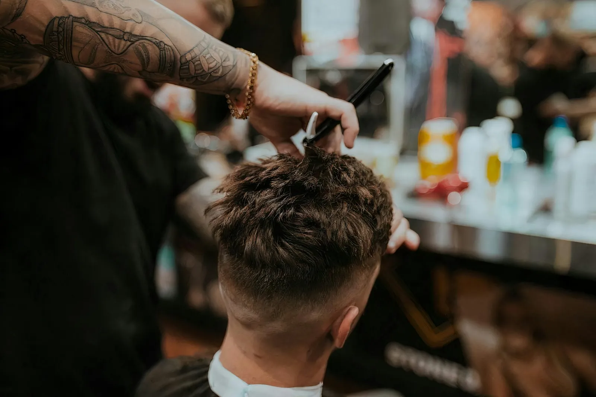
01Signature Haircut
The full cut: consultation, scissor and clipper work, textured finish and a clean neckline. The house cut, done properly.
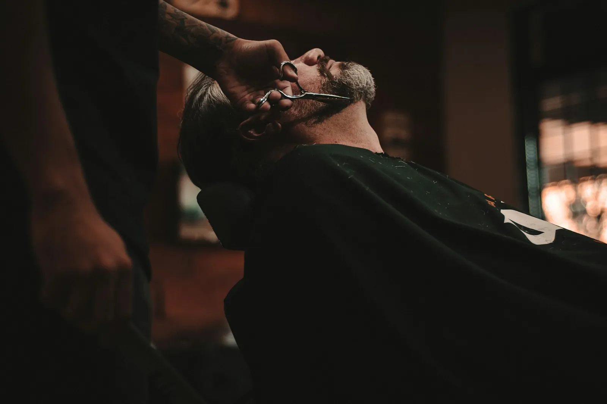
Hair Art by Abbas — Bahria Town Phase 7, Rawalpindi
Sharp cuts, clean skin fades, beard sculpting and hot-towel shaves — done by a team of professionals, in the chair, every single time.
Scroll — the chair is waiting ↓
01 — The Chair
That is the job, stated plainly. Hair Art by Abbas is a men's hair salon and grooming studio in Bahria Town Phase 7, Rawalpindi — inside Wallayat Complex, Plaza 49. No frills, no rush, no guesswork: a professional team, a sharp set of tools, and a chair that does the talking.
Walk in with the cut you have. Walk out with the cut you actually wanted. Every client leaves the salon feeling fabulous — that is the standard the team sets for itself, and the reason 188 reviewers have rated the shop 4.5 out of 5.
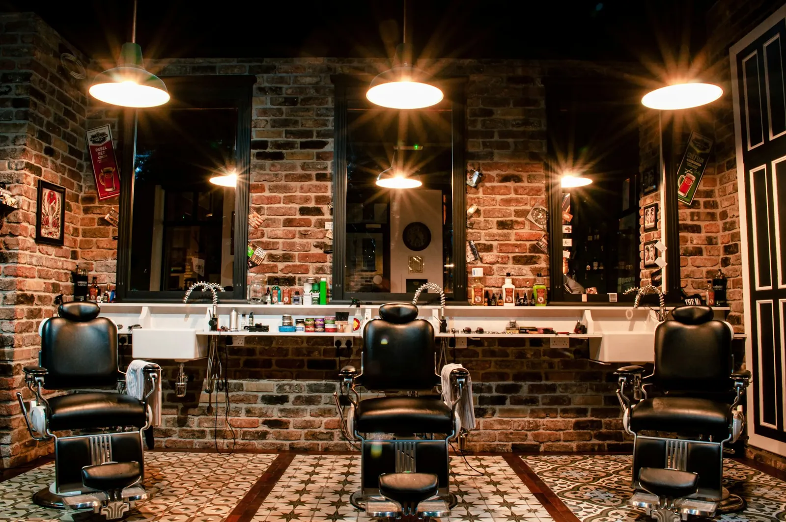
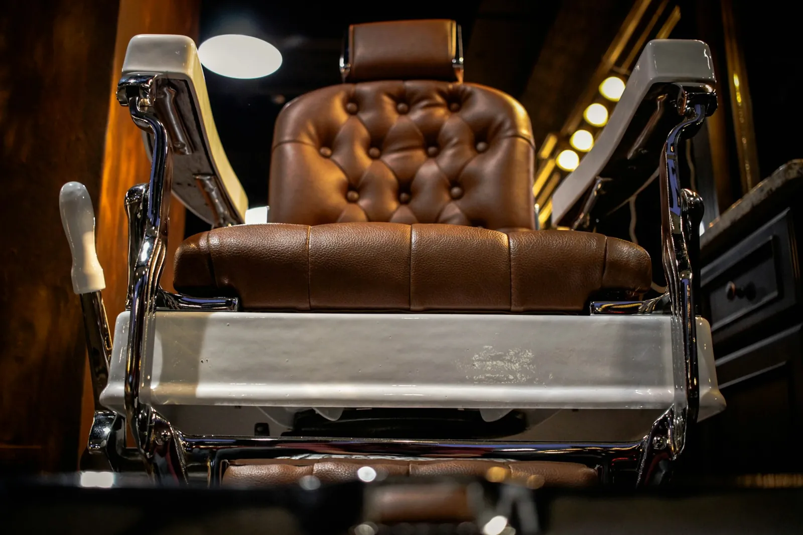
02 — The Cut Menu
Six ways to sit in the chair. Tell the barber what you want — or just say "make it sharp" and let him decide. Prices on request — call ahead and ask.

01The full cut: consultation, scissor and clipper work, textured finish and a clean neckline. The house cut, done properly.
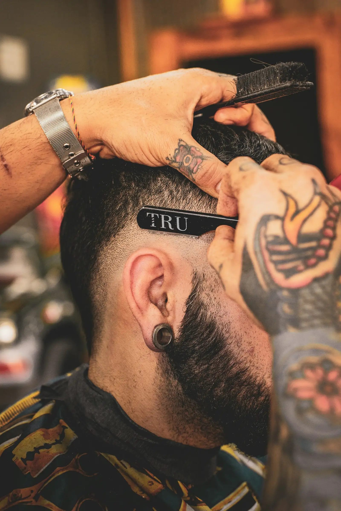
02Low, mid or high — blended down to the skin with no visible lines. The fade that holds its shape for weeks, not days.
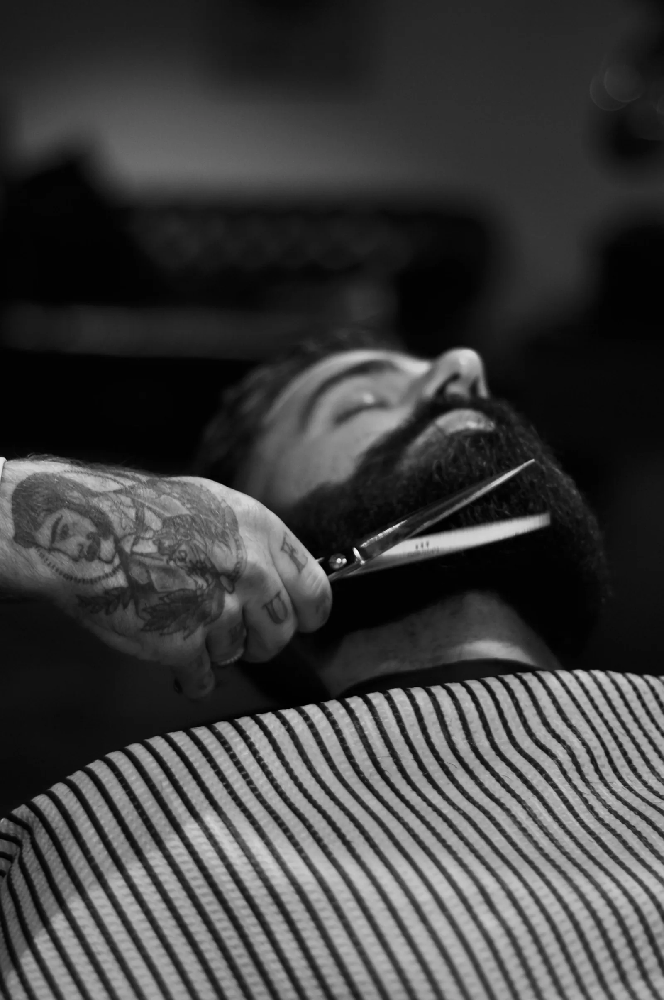
03Shape, line-up and tidy. The beard gets the same attention as the hair — balanced to your face, finished clean.
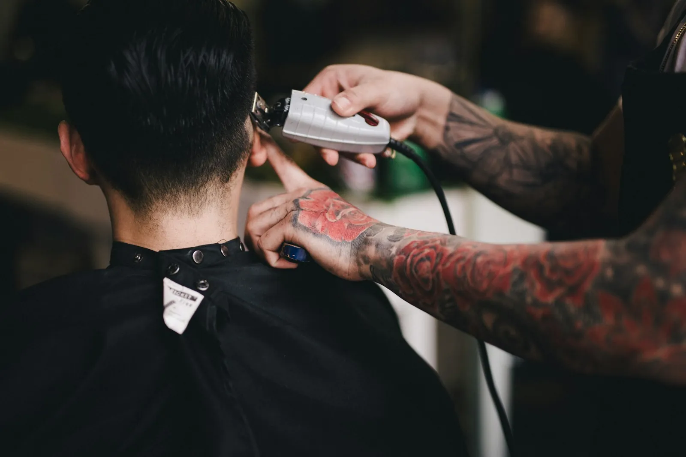
04Crisp edges, clean nape, sharp hairline. The small details that make a cut look fresh even a week later.
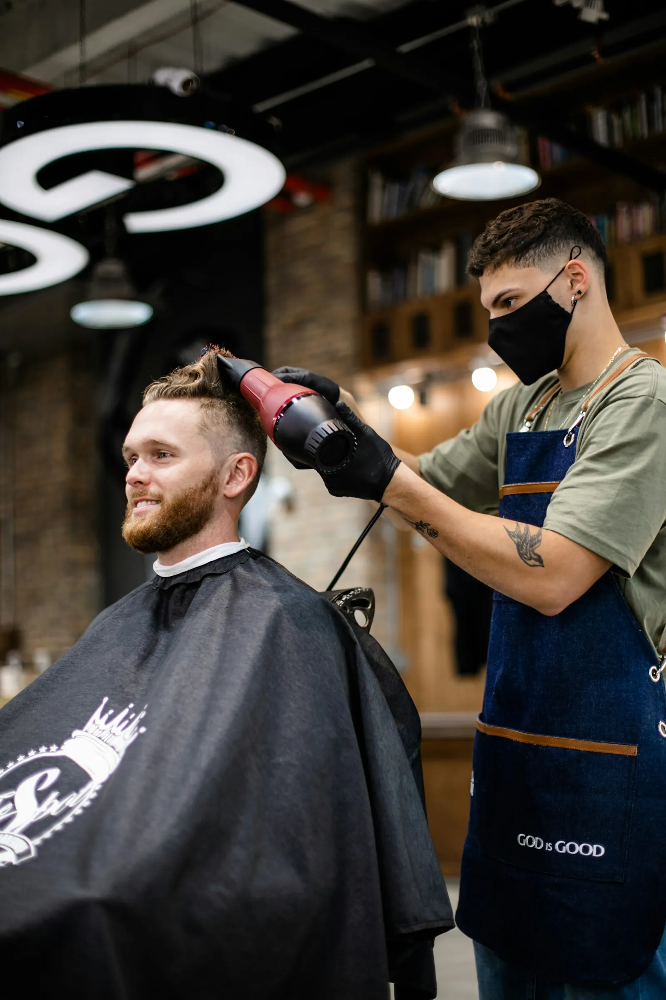
05A proper wash, a careful dry, and styling that you can actually repeat at home. Leave the shop looking finished.
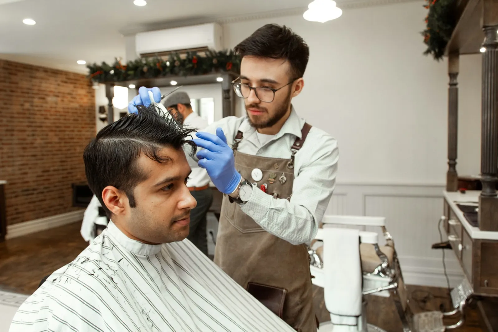
06Cut, beard and finish in one sitting. The whole job, top to bottom, for days when you want to walk out properly done.
Prices on request — call +92 305 4025763 and ask before you come in.
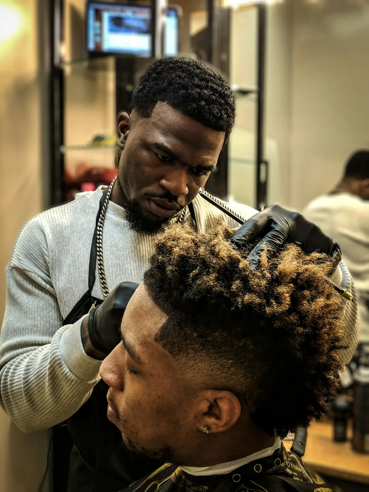
03 — The Signature
A fade is easy to start and hard to finish. The blend has to disappear — no lines, no steps, no patch where the guard changed. That is the cut this chair is known for.
04 — The Chair Ritual
Every appointment runs the same way — so you always know what you are getting.
Sit down, say what you want. Show a photo or just describe it — the barber will tell you honestly what works with your hair.
Clippers, then scissors. Length comes off first, shape comes next, and nothing is rushed.
Fade blended, beard shaped, nape and hairline cleaned up. This is where a good cut becomes a sharp one.
Wash, dry, style — and a look in the mirror from every angle before you get up.
05 — Fresh Out of the Chair
Finished cuts and the chair in action. Tap any photo to see it full size.
06 — Why Locals Choose
No invented praise here — just the facts the shop stands on.
4.5 out of 5 from 188 Google reviews. That is not a launch-week score — that is a shop people keep rating after they keep coming back.
"We have a team of professionals" — the shop's own words. Cuts are done by barbers who do this all day, not by whoever happens to be free.
Cuts, fades, beards and shaves are the entire menu. Everything in the shop — chairs, tools, time — is set up for one job.
Wallayat Complex, Plaza 49, Bahria Town Phase 7 — right in the middle of the phase, not tucked away down a side street.
07 — Tools of the Trade
A cut is only as good as the tools in the barber's hand. Clippers for the blend, shears for the texture, a straight razor for the finish — kept sharp, kept clean, and picked for the job at hand.
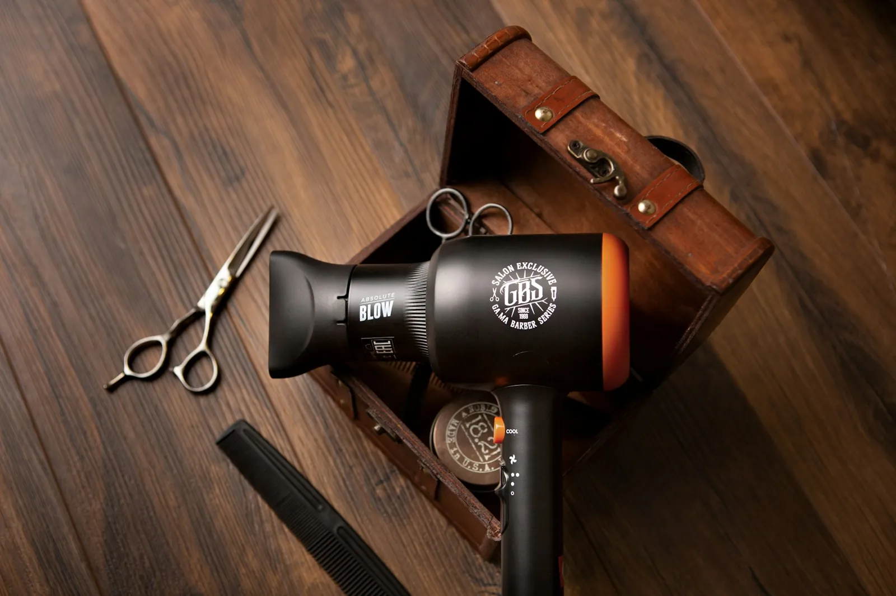
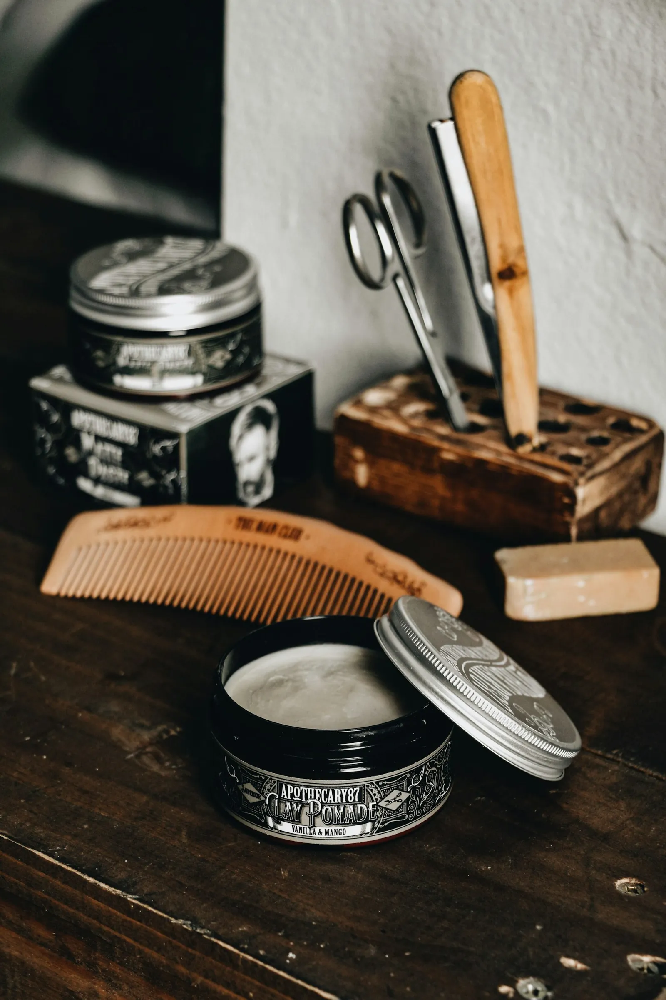
08 — Good to Know
Call or WhatsApp ahead to book your slot — +92 305 4025763. Calling first is the surest way to get the time you want, especially on weekends.
Just say so. Tell the barber how you normally wear your hair and how much upkeep you want — he will suggest a cut that fits your hair and your routine, and tell you honestly if a style will not work for you.
Yes — beard sculpting and trimming, line-ups, and hot-towel shaves with a straight razor are all part of the chair. You can book a beard-only visit or add it to a haircut.
Wallayat Complex, Plaza 49, Bahria Town Phase 7, Rawalpindi. The map below shows the spot — tap "Open in Google Maps" for directions from where you are.
Prices are on request — call +92 305 4025763 and ask for the price of the cut or service you want before you come in.
Hours are not published online — call +92 305 4025763 to confirm today's opening time before you head over.
09 — Visit
Call — +92 305 4025763
WhatsApp — +92 305 4025763
Facebook — Hair Art by Abbas
Opening hours are not published online — call to confirm today's hours before you come.
Wallayat Complex, Plaza 49 — Bahria Town Phase 7. Call, book, sit down.
Call +92 305 4025763